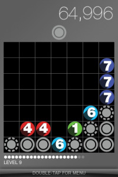
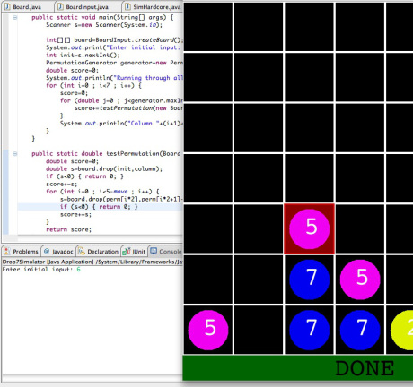
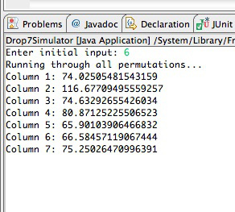
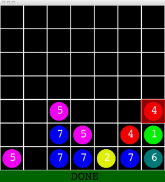

Drop7, and the Java program that can beat it.
If anyone with an iPhone hasn’t seen this game yet, it’s a must. It’s a simple game called Drop7, and it is certainly the most addicting game available for anyone who likes numbers as much as I do. It’s a perfect mix between Tetris and Sudoku, and has eaten up considerable chunks of my free time. This post is about the Java simulator I built to “beat” the game.

That nifty little game
Drop7 is unique from other puzzle games in that the objective is to simply maximize your score before the screen fills up with discs (if you’re unfamiliar with the game, check out this excellent tutorial I found online at Nick Seeber’s blog). Every turn, a random disc is given to you to drop in any of the 7 columns on the screen. If, after you drop the disc, any of the numbers on the screen are equal to the number of discs they are touching either horizontally or vertically, the disc explodes and you get some points. After the explosion, the discs gravitate to the bottom of the screen- if the rearrangement of discs allows another explosion to take place, you get more points. Typically, Drop7 players aim to set up chains of explosions to earn more points for each disc. An entire synopsis of the game is on Seeber’s blog, and I highly recommend checking it out.
What I did
Drop7 is essentially a game of probability. In setting up chains of explosions, experienced Drop7 players find themselves waiting for certain numbers or “throwing away” numbers that they don’t want. This is skewing the probabilities out of your favor- every disc in Drop7 is an investment, and wasting the investment can bite you in the butt later when you’re stuck on the higher levels with a less-than-exemplary score, biding your time before the never-ending gray discs end your game.
What I did was create a program in Java that can simulate a game of Drop7. I then created a permutation generator, which runs through all the combinations of columns and future values and combines them in an expected value function to give the expected score for dropping a certain number in a certain column, allowing me to pick the column with the highest expected value. That sentence probably doesn’t make sense in one go, so I’ll elaborate more below.

The Java Simulator
I would like to preface this by saying that all my source code will soon be available on my blog (edit: it is available on (github](https://github.com/keshavsaharia/Drop7Simulator)). The simulator I made is built to work on the Hardcore mode in Drop7, although it can be expanded to any of the game’s various game modes.
First, I made a very basic user interface in order to easily enter numbers into the Drop7 simulator, as you can see above in the right side of the screenshot. The input is then fed into a Board class, which is essentially a drop7 game. Interfacing with the Board.java class allows me to drop numbers into the game and simulate the numbers exploding.
I then built a permutation generator, which is nothing more than a digital 7-bit counter, which gives me permutations for any size radix and length. The generator creates every single possible combination of column drops and future numbers that Drop7 could give me. For example, permutation number 777,777 (in honor of Drop7), is [ 1 1 7 5 2 7 5 1 1 ]. This permutation represents a situation where the first number is dropped in the first column, followed by a 1 that is dropped in the 7th column, followed by a 5 that is dropped in the 2nd column, and so on (the odd indexes are columns, even ones are discs). The simulator plugs in this permutation into the game, records what the score will be if that permutation “comes true”, and moves on to the next one ([ 1 1 7 5 2 7 5 1 2 ] – the only change in the next one is that the last number is dropped in the second column instead of the first one). Every single possible combination is tabulated into an “expected value”, which is the average of all the permutations.

This works out to 7^9, or 40,353,607, combinations. Luckily computers don’t get bored of playing the same level of Drop7 40 million times.
Obviously, this raises the issue of computing time- running 40 million Drop7 levels takes a considerable amount of computing power. In some divine electronic act of humor, the first run I ever made of the simulator took exactly 7 minutes and 7 seconds to process all 40.3 million permutations (running without multithreading on an Intel core i5). Assuming negligible context switching with multithreading, I’d say a multithreaded approach could crunch the permutations in about 2-3 minutes. After dropping the first number, the subsequent permutations for the 2nd, 3rd, 4th, and 5th move take less than 10 seconds to compute (only 7^7 combinations for the second disc, or 823,543). After the 5th disc, the game levels-up, which adds a row of grays to the bottom of the simulator.
So what do I do about the gray discs that get blown up in the simulator? Obviously, they can’t be replaced by random numbers, as this would not take into account all the possible outcomes from the gray disc. Instead, the simulator branches out, and simulates every possible replacement combination for how many ever grays are exploded in the simulator. Usually, only one gray is exploded, so it just tests the numbers 1-7 in place of the gray and takes the average value of the resulting score (a simple way to get the expected value). This allows the simulator to favor, but not over-favor, permutations that explode the gray discs.
In short, the Java virtual simulator goes through every possible Drop7 situation that could occur given the current board, and suggests the best move. Obviously, this isn’t guaranteed to be the best move, but having probability on your side is never a bad thing. After a few excruciatingly long waits for the permutations to finish crunching, I can say with confidence that the simulator does indeed work. If you want the source code, check this page in a couple days.
I’m sure you’ve stopped at this point to openly laugh at my simulator’s 7-minute-long processing time. Although it does give me a perfect time slot to make 2.33 cups of 3-minute noodles, its simply not feasible. So how to reduce the processing time?
Taking over the residence’s technology
The lovable thing about Java is how it is pretty easy to rig interesting setups, both locally and over a network. The lovable thing about my house is that there are laptops sprawled everywhere that are almost exclusively used for my mom and sister’s Facebook access, and not much else. Luckily, there is a hero amongst us who will put that computing power to good use.

I began with my sister’s computer and worked my way around the house, porting my Java simulator along with a makeshift little communicator class that could communicate with my laptop over our house’s wireless network. After hunting down seven computers (including my own), I ran my makeshift simulator, and assigned each computer to crunch one column. There was very little communication over the network, as each computer had its own permutation generator and an assigned column, and only had to crunch that column and return the result. As the numbers flowed in, they taught me something very important: which column I should drop that good-for-nothing 1 into.
So, after converting the technology in my house into a makeshift computing cluster, I was able to play Drop7 with the help of my Java simulator and with 1 minute of drumming my fingers. It’s given me a reason to be excited to go back to work, because cluster computing there is easier than cheese. With a little help of JLink, I can link my code to Mathematica and use Mathematica’s powerful built-in cluster computing tools.
(right: the slightly shitty input field I made to enter the Drop7 board into the simulator. You click on a box and then type a number to put it on the grid. It does support the gray circles, although they aren’t shown)
So, what now?
If you read through all that, you are probably one of the few people who would be interested in downloading my source code. You can also check the downloads page for more information on the source code. I hope other people out there continue to improve on the simulator and possibly find better ways to maximize scores in the wonderful game of Drop7.